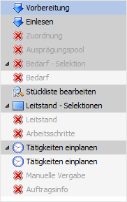
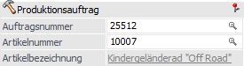
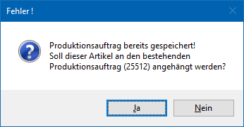
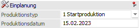
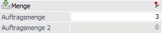
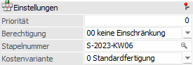
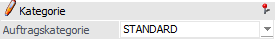
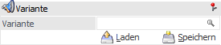

Im linken und mittleren Bereich der Produktionsvorbereitung werden u.a. die wichtigsten Auftragsdaten (z.B. Produktionsartikel und Produktionsmenge) hinterlegt.

Folgende Eingabefelder, Einstellungen und Information stehen zur Verfügung:
Navigation

Im linken Teil des Fensters befindet sich die Navigation, in welcher alle Hauptbereiche der PPS zu finden sind. Die aktiven Einträge können direkt angewählt werden und bewirken einen Wechsel in den jeweiligen Programbereich.
Produktionsauftrag

Ø Auftragsnummer
An dieser Stelle erfolgt die Eingabe der Produktionsauftragsnummern (20-stellig, alphanumerisch), wobei dieses gemäß Nummernkreis vorgeschlagen wird (WinLine Start - Parameter - Applikations-Parameter - PPS-Parameter - Produktionsauftragsanlage - Feld "Nummernkreis").
Achtung
Über die Eingabe einer bereits existierenden Produktionsauftragsnummer ist es möglich den aktuellen Auftrag an einen bestehenden Produktionsauftrag anzuhängen. Hierzu muss nach dem Drücken des Buttons "Ok" bzw. der Taste F5 der folgende Hinweis mit "Ja" bestätigt werden.

Ø Artikelnummer
Eingabe des zu produzierenden Produktionsartikels (Halbfertig- oder Fertigprodukt).
Achtung
In dem Produktionsartikel muss die entsprechende Stückliste hinterlegt sein!
Ø Artikelbezeichnung
Hier wird die Bezeichnung des zu produzierenden Artikels angezeigt.
Einplanung

Ø Produktionstyp
Über den Produktionstyp wird bestimmt, ob die Produktion zu einem bestimmten Zeitpunkt (gemeint ist das "Produktionsdatum") starten oder enden soll. Folgende Optionen können gewählt werden:
ü 0 - Zielproduktion
Bei diesem
Produktionstyp wird über das "Produktionsdatum" ein Zeitpunkt definiert, zu dem
der Produktionsauftrag abgeschlossen sein soll und der Artikel somit fertig
gestellt sein muss. Diese Methode ist die sogenannte
"Rückwärtsterminierung".
Hinweis
Die Zielproduktion kann unter Umständen dazu führen, dass der Produktionsauftrag, z.B. wegen Ressourcenknappheit, nicht zeitgerecht fertig gestellt werden kann und somit eine Einplanung nicht möglich sein wird.
ü 1 - Startproduktion
Bei diesem
Produktionstyp wird über das "Produktionsdatum" ein Zeitpunkt definiert, zu dem
der Produktionsauftrag begonnen werden soll. Diese Methode ist die sogenannte
"Vorwärtsterminierung".
Hinweis
Bei der Startproduktion kann es nie zu Konflikten kommen. Allerdings kann unter Umständen sehr viel Zeit benötigt werden bis der Produktionsauftrag beendet werden kann.
Ø Produktionsdatum
An dieser Stelle muss das Produktionsdatum, welche als Ausgangsdatum der Planung dient, hinterlegt werden.
Menge

Ø Auftragsmenge
Hier erfolgt die Eingabe der Menge, welche produziert werden soll.
Hinweis
In den Artikelstammdaten kann eine zu produzierende Mindestmenge hinterlegt werden. Ob eine Unterschreitung dieser Menge zulässig ist bzw. ob es einen Hinweis geben soll, kann in den PPS-Parametern (Bereich "Parameter" - Option "Prod. Mindestmenge") , definiert werden.
Ø Auftragsmenge 2
Sollte der Produktionsartikel in 2 Mengen geführt werden, so kann an dieser Stelle auch die Auftragsmenge für die 2 Mengen eingegeben werden.
Einstellungen

Ø Priorität
In diesem Feld kann eine Prioritätsnummer (5-stellig) für diesen Produktionsauftrag vergeben werden, wobei die Zahl frei gewählt werden kann. Die Priorität dient z.B. als Selektionskriterium in diversen Programmen.
Hinweis
Wurden Produktionsauftragskategorien angelegt, so wird durch die Hinterlegung einer Priorität die Auftragskategorie automatisch gesetzt und umgekehrt.
Achtung
Über die PPS-Parameter (Bereich "Parameter" - Option "absteigende Priorität verwenden…") kann definiert werden, ob "0" oder "99999" die höchste zu vergebene Priorität besitzt.
Ø Berechtigung
Für jeden Produktionsauftrag kann ein Berechtigungsprofil vergeben werden. Wenn der Anwender einen Auftrag aufruft, wird geprüft, ob der Anwender einer Benutzergruppe zugeordnet wurde, welche in dem jeweiligen Profil enthalten ist und ob somit eine Bearbeitung erlaubt wäre (nähere Informationen entnehmen Sie bitte dem WinLine ADMIN - Handbuch).
Hinweis
Benutzern des Typs "Administrator" oder mit der Administratorenberechtigung "Benutzeradministrator" steht in der Auswahlbox der Punkt ">> Neues Profil" zur Verfügung. Über die Anwahl dieses Eintrags kann in der Folge ein neues Berechtigungsprofil angelegt werden.
Ø Stapelnummer
An dieser Stelle kann für den Produktionsauftrag eine Stapelnummer hinterlegt werden. Die Stapelnummer kann wiederum in verschiedenen Programmbereichen (z.B. Leitstand, Materialentnahme, Arbeitsschein, etc.) als Selektionskriterium verwendet werden.
Ø Kostenvariante
An dieser Stelle kann die Kostenvariante des Produktionsauftrags hinterlegt werden.
Hinweis
Jeder Tätigkeit können bis zu drei Kostenvarianten zugeordnet werden, d.h. die Tätigkeit kann unter maximal drei unterschiedlichen Gesichtspunkten angelegt werden. Dadurch hat die Kostenvariant einen direkten Einfluss auf die nachfolgende Einplanung des Produktionsauftrags.
Kategorie

Ø Auftragskategorie
An dieser Stelle kann die Produktionsauftragskategorien hinterlegt werden, wobei diese durch Angabe eine Priorität automatisch gesetzt wird (und umgekehrt).
Variante

Ø Variante
Wurde bei der Stückliste des Produktionsartikels Varianten bzw. Subvarianten definiert, so kann hier der entsprechende Variantenstring hinterlegt werden. Grundsätzlich ist die Hinterlegung über mehrere Wege möglich:
ü Manuelle Eingabe des
Variantenstrings
Bei der manuellen Eingabe des Variantenstrings stehen
folgende Möglichkeiten zur Verfügung:
ü mehrere
Variantenkennzeichen
Werden mehrere Variantenkennzeichen in Form eines
Variantenstrings eingetragen (z.B. "DZK"), dann wird pro Stücklistenebene ein
Kennzeichen herangezogen (1. Stücklistenebene Variante "D", 2. Stücklistenebene
Variante "Z", ab der 3. Stücklistenebene Variante "K").
Hinweis
Wenn mit Subvarianten gearbeitet wird, dann müssen die Varianten jeder Stücklistenebene durch Klammern "{" bzw. "}" zusammengefasst werden (nähere Informationen siehe Kapitel Stückliste - Register "Varianten").
Achtung
Falls über den Variantenstring nicht alle existierenden Stücklistenebenen definiert wurden, dann wird für diese undefinierte Ebenen das letzte Variantenkennzeichen des hinterlegten Strings verwendet und nicht die Standardvarianten.
Beispiel
Es existiert ein
Produktionsartikel mit 5 Stücklistenebenen und in jeder Ebene ist eine Variante
definiert. Bei der Produktionsauftragsanlage wird der Variantenstring "ABC"
hinterlegt, d.h. es sind bisher nur für die ersten 3 Stücklistenebenen die
Varianten gewählt worden.
Bei der Anlage des Auftrags würde in diesem Fall
der String automatisch auf "ABCCC" gesetzt werden. Sollte in der
Ebene 4 bzw. 5 allerdings gar keine Variante "C" anlegte worden sein, dann würde
keine Variante genutzt werden und es würden Komponenten bzw. Tätigkeiten
fehlen!
ü ein Variantenkennzeichen
Wird
nur ein Kennzeichen eingetragen, so wird dieses für alle Ebenen genommen.
Achtung
Wenn dieses Variantenkennzeichen in den anderen Stücklistenebenen nicht angelegt wurde, dann wird für die Stücklistenebene keine Variantenkomponenten bzw. -tätigkeiten genutzt. Falls über den Variantenstring nicht alle existierenden Stücklistenebenen definiert wurden, dann wird für diese undefinierte Ebenen das letzte Variantenkennzeichen des hinterlegten Strings verwendet und nicht die Standardvarianten.
ü kein Kennzeichen
Wird kein
Kennzeichen eingetragen, so wird die Standardvariante ("*") genommen.
ü Auswahl per
Variantendefinition
Durch Anwahl des Lupen-Symbols oder der Taste F9 kann die
Variantendefinition aufgerufen
werden. Über dieses Fenster kann aus den verfügbaren Varianten eines
Produktionsartikels die gewünschte Variantenkombination Schritt für Schritt
ausgewählt werden.
ü Laden eines
Variantenstrings
Durch Anwahl des Buttons "Laden" wird die Variantensteuerung aufgerufen. In
dieser werden alle bereits gespeicherten Variantenkombinationen aufgelistet und
können geladen werden.
ü Variantenvorschlag
Wurde im
Artikelstamm ein Variantenvorschlag hinterlegt, so wird dieser Vorschlag
automatisch (nach Eingabe der Artikelnummer) in das Feld "Variante"
eingetragen.
Ø Laden
Durch Anwahl dieses Buttons wird die Variantensteuerung geöffnet. In diesem Fenster werden zuvor abgespeicherte Variantenstrings angezeigt und können per Doppelklick in das Eingabefeld "Varianten" übernommen werden.
Ø Speichern
Durch Drücken dieses Buttons wird die Variantensteuerung geöffnet, in welchem der zuvor definierte Variantenstring abgespeichert werden.